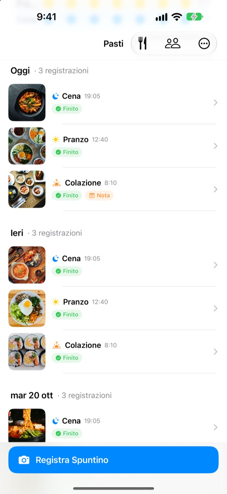
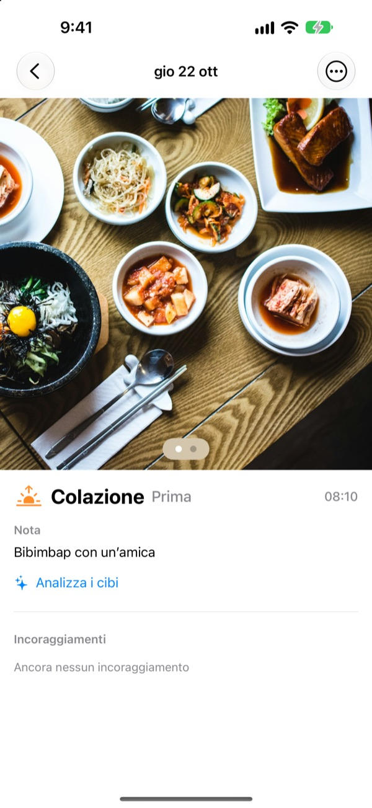
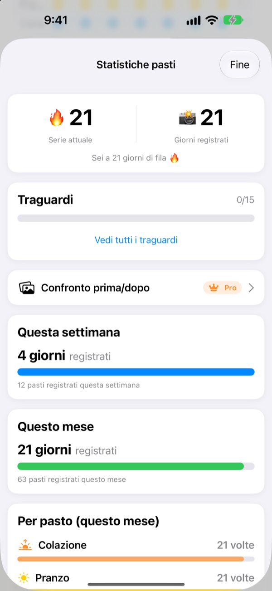
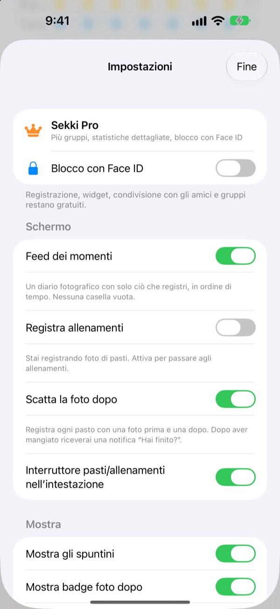

Una foto prima di mangiare.
E il pasto è registrato.
Sekki guarda l'ora della foto e la mette tra colazione, pranzo, cena o spuntino. Registra anche un solo pasto al giorno e la serie continua.
Registrazione, statistiche, widget e condivisione con gli amici sono gratis.

Prova tu
Scegli un orario e tocca il pulsante di registrazione. Come nell'app, il pulsante indica già il pasto di quell'ora.
Hai mai mollato un diario alimentare dopo tre giorni?
Salti una colazione, dimentichi una cena, e le caselle vuote iniziano a pesare finché non cancelli l'app. Sekki non ha caselle vuote. Si accumulano in ordine solo i pasti che registri, e basta una foto perché la giornata conti.
Scatta, e il pasto è già al suo posto
In base all'ora della foto, Sekki la mette tra colazione, pranzo, cena o spuntino. Aggiungi foto prima e dopo, registra senza foto o scrivi una nota.
Il cibo viene riconosciuto gratis sul dispositivo, e le tue foto non lasciano mai il telefono.

Un diario che non si accorcia mai
Un pasto al giorno tiene viva la serie, e il totale dei giorni registrati non scende mai. Le statistiche settimanali e mensili mostrano quanti giorni e pasti hai registrato, non una percentuale di successo.
Strada facendo raccogli traguardi come Serie da 7 giorni o Mattiniero.

Solo i pasti che scegli, senza aprire l'app
Scegli per quali pasti ricevere promemoria e regola gli orari sulla tua giornata. Dopo la foto di prima, segna Finito direttamente dalla notifica.
Registra anche con il tasto Azione, Siri, Comandi rapidi o un widget, e aggiungi amici con un codice per farvi il tifo con emoji e commenti.

Si parte in tre passi
- 1
Scegli i pasti
Al primo avvio Sekki ti chiede quali pasti ricordarti. Puoi cambiarli nelle Impostazioni.
- 2
Una foto prima di mangiare
Il pulsante di registrazione mostra già il pasto dell'ora. Tocca, scatta, fatto.
- 3
Finito? Un tocco
Tocca Finito nella notifica o nel widget, oppure aggiungi una foto di dopo.
Registrare senza aprire l'app
- Notifica
- Dopo la foto di prima, segna Finito direttamente dall'avviso
- Widget della schermata Home
- Vedi i pasti di oggi e quello in corso, poi tocca Finito
- Widget della schermata di blocco
- Rettangolare, circolare e in linea
- Tasto Azione · Siri · Comandi rapidi
- Segna Finito con un tasto o una frase
- Salva in Foto
- Attivalo nelle Impostazioni per avere album Sekki separati per pasti e allenamenti
- Modalità allenamento
- Gli allenamenti restano separati dai pasti, con quelli del mese a colpo d'occhio
Il pulsante Finito del widget richiede iOS 17 o versioni successive.
Registrare è gratis. Sekki Pro va più a fondo.
Gratis
- Registrazione con foto e smistamento automatico, foto prima e dopo, note
- Serie, giorni totali, statistiche settimanali e mensili, traguardi
- Promemoria per i pasti scelti, Finito senza aprire l'app
- Widget, tasto Azione, Siri e Comandi rapidi
- Condivisione di pasti e allenamenti con gli amici, emoji e commenti
- Creare un gruppo, unirti a quanti ne vuoi
- Riconoscimento del cibo sul dispositivo
Sekki Pro
- Più gruppi: famiglia, lavoro, compagni di palestra
- Confrontare fianco a fianco i pasti di qualche settimana fa e di oggi
- Vedere i cibi che mangi più spesso
- Bloccare l'app con Face ID o Touch ID
Abbonamento annuale o mensile, oppure acquisto unico a vita
L'abbonamento si rinnova automaticamente se non viene disdetto almeno 24 ore prima della fine del periodo. Disdici quando vuoi da Impostazioni > Account Apple > Abbonamenti. Termini di servizio: m1zz.github.io/RoutineCamera/it/terms.html
Domande frequenti
Dove vengono salvate le mie foto?
Sul tuo dispositivo. Se attivi Salva in Foto automaticamente nelle Impostazioni, finiscono anche negli album Sekki di Foto. Finché Condividi i miei pasti è attivo (all'inizio lo è), vengono caricate su iCloud perché gli amici aggiunti possano vederle. Puoi disattivarlo in Impostazioni > Account e condivisione.
Come aggiungo gli amici?
Nella schermata Amici condividi il tuo codice di sei caratteri e inserisci quello del tuo amico. Puoi incollare più codici insieme separandoli con una virgola.
Come faccio il tifo per un amico?
Apri un pasto del tuo amico e lascia un'emoji o un breve commento. Se non ha ancora registrato nulla, tocca la casella vuota per dargli un colpetto.
Se salto un pasto perdo la serie?
No. Registra un qualsiasi pasto quel giorno, spuntini compresi, e la serie continua. Anche se salti un giorno intero, il totale dei giorni registrati non scende.
Non ricevo notifiche.
Controlla in Impostazioni di iOS > Notifiche che le notifiche di Sekki siano consentite e che il dispositivo abbia effettuato l'accesso a iCloud. Gli orari dei promemoria si cambiano nelle impostazioni dell'app.
Il riconoscimento del cibo invia le foto a un server?
No. Avviene sul dispositivo, quindi le foto non lasciano mai il telefono. Gratis e senza limiti.
Come elimino account e dati?
Vai in Amici > Account > Elimina account. L'account e i dati dei pasti sul server vengono eliminati e non si possono recuperare. Se qualcosa non va, scrivici.
Come disdico l'abbonamento?
In Impostazioni > Account Apple > Abbonamenti. Si rinnova automaticamente se non lo disdici almeno 24 ore prima della fine del periodo. L'acquisto a vita si paga una volta sola.
Bug, idee o domande sull'account: scrivi a leeo@kakao.com o in DM a @lee25_ios su Instagram. Di solito rispondiamo entro un paio di giorni.